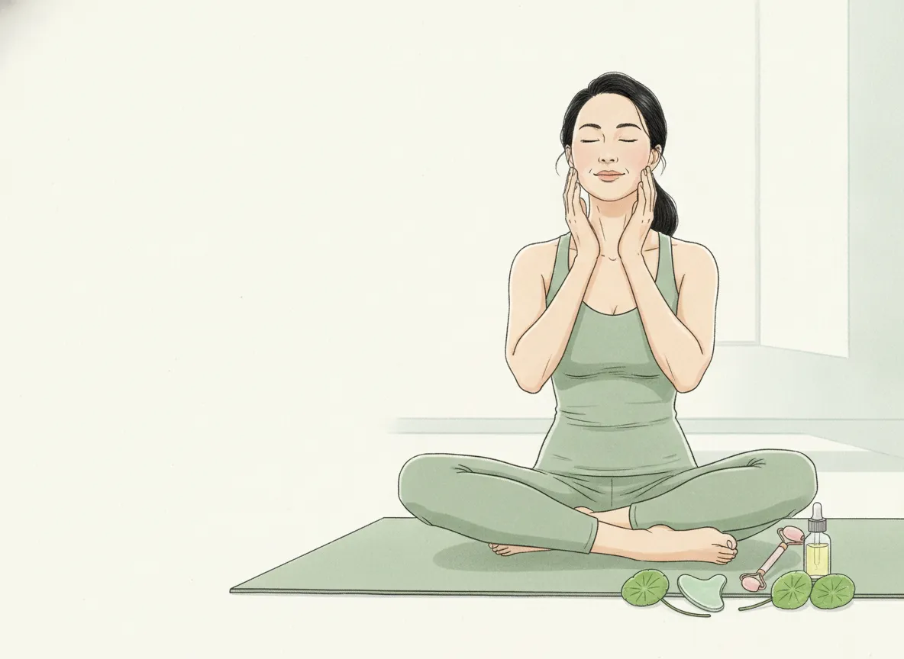
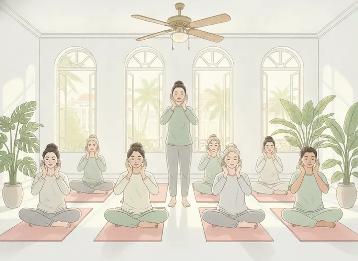
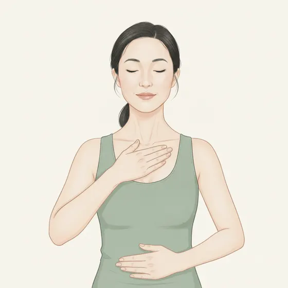
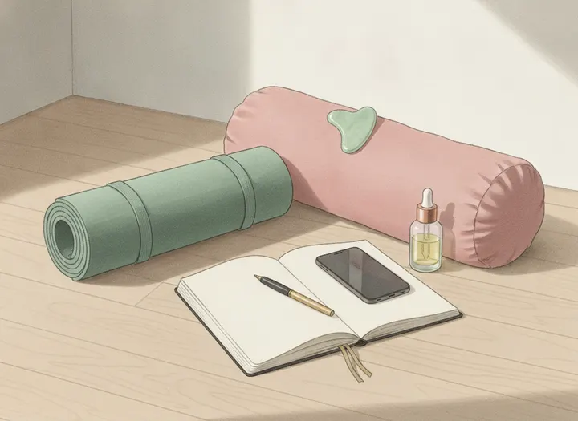

Bản đồ Face Yoga
Nguồn gốc, thị trường, giải phẫu, ba cách nhìn Tây y, Đông y, Diện chẩn và bộ công cụ để bắt đầu dạy.
- Không có một người phát minh. Face yoga là chỗ gặp của yoga, Đông y, Kobido và thể dục mặt phương Tây; bùng lên từ 2006–2007.
- Bằng chứng nhỏ nhưng tích cực: tập 20 tuần, bác sĩ đánh giá trẻ hơn khoảng 3 tuổi. Chưa có thử nghiệm lớn.
- Ngách nhỏ trong ngành lớn: khoảng 1 tỷ USD trong ngành làm đẹp 1,21 nghìn tỷ USD.
- Việt Nam mới ở bước đầu: khoá online giá rẻ và workshop lẻ.
- Lợi thế của bạn: giải phẫu, hơi thở, thần kinh, sàng lọc an toàn.

Face yoga đến từ đâu?
Nguồn gốc chính xác chưa rõ. Face yoga hôm nay là chỗ gặp của bốn dòng chảy.
Dòng thời gian
Thị trường thế giới
Face yoga hiếm khi được thống kê riêng; các con số chỉ để hình dung quy mô, mỗi ô ghi rõ độ tin cậy.
Face yoga nhỏ cỡ nào?
Diện tích mỗi hình vuông tỷ lệ với quy mô thị trường.
Vì sao đang tăng
Bằng chứng khoa học đang ở đâu?
Câu nói an toàn với học viên: “Tập đều khoảng 20 tuần có thể làm má đầy hơn và mặt trông trẻ hơn một chút. Nghiên cứu còn nhỏ.”
Chi tiết từng nghiên cứu
| Nghiên cứu | Thiết kế | Kết quả chính |
|---|---|---|
| Alam và cs. 2018 | 27 phụ nữ 40–65 tuổi tham gia, 16 hoàn thành; 32 bài, 30 phút mỗi ngày 8 tuần rồi cách ngày đến tuần 20; không nhóm chứng | Tuổi ước tính 50,8 → 48,1; má trên và má dưới đầy hơn |
| Hwang và cs. 2018 | 50 phụ nữ; dụng cụ PAO 30 giây × 2 lần/ngày, 8 tuần; đo siêu âm | Thiết diện cơ gò má lớn và cơ hai bụng tăng; đường hàm gọn hơn |
| Güzel và cs. 2025 | 12 phụ nữ; 8 tuần; đo bằng Myoton | Cơ nông dịu lại; cơ mút, cơ hai bụng khoẻ lên; mọi cơ đàn hồi hơn |
| Van Borsel và cs. 2014 | Tổng quan 9 nghiên cứu (Nam Mỹ) | Chưa đủ chất lượng để kết luận |
| de Manincor và cs. 2024 | Tổng quan 7 nghiên cứu | Có vẻ có ích nhưng bằng chứng chưa đủ |
| NCT06765408 | Thử nghiệm đã đăng ký | Đáng theo dõi |
Những tên tuổi định hình thị trường
Thị trường Việt Nam
Ngành làm đẹp lớn và đông cơ sở; face yoga mới ở giai đoạn đầu.

Face yoga ở Việt Nam đang ở bước nào?
Số thẩm mỹ viện và salon
Chỉ có 3 mốc số liệu; đoạn nét đứt là dự kiến.
Ranh giới pháp lý
- Khám, chữa bệnh phải có giấy phép (Luật 15/2023). Lớp face yoga là rèn luyện, chăm sóc; không chẩn đoán, không “điều trị”.
- Năm 2012, Sở Y tế TP.HCM yêu cầu không dùng, quảng bá Diện chẩn để chữa bệnh khi chưa được Bộ Y tế cho phép.
- Dùng cụm “hỗ trợ thư giãn, chăm sóc”; tránh “chữa”, “trị”, “thải độc”.
Các ngách đang phát triển
Chấm xanh là mức gần với kỹ năng sẵn có của giáo viên yoga phục hồi (5 = gần nhất).
6 ngách khác
Bản đồ khuôn mặt
Bấm vào hình hoặc danh sách. Cơ biểu cảm bám thẳng vào da, nên face yoga làm hai việc: thả lỏng cơ gây nếp và tăng cường cơ nâng đỡ.
Lão hoá diễn ra theo tầng. Face yoga chạm tới tầng nào?
Sáu bài nền tảng
Dẫn lưu bạch huyết 8 bước
Vùng đầu cổ có hơn 300 hạch; bạch huyết mặt chảy xuống cổ rồi đổ vào tĩnh mạch ở hõm trên xương đòn.

Không dẫn lưu khi: nhiễm trùng, sốt; huyết khối; suy tim chưa kiểm soát; đang điều trị ung thư (cần bác sĩ cho phép); hạch sưng cứng bất thường.
Tây y, Đông y, Diện chẩn
Ba cách mô tả cùng một khuôn mặt. Nắm cả ba để nói chuyện được với học viên, bác sĩ và thầy thuốc Đông y.
Hai dây thần kinh của khuôn mặt
Nửa trái hình: vùng cảm giác của dây V. Nửa phải: năm nhánh vận động của dây VII.
Gua sha “tăng tuần hoàn 4 lần”: đọc cho đúng
Con số đến từ một nghiên cứu năm 2007 trên 11 người, cạo mạnh trên lưng, không nhóm chứng, không làm trên mặt.
Kinh lạc đi qua mặt
Sáu kinh dương cùng Đốc mạch, Nhâm mạch đều lên mặt (sơ đồ giản lược, đối xứng hai bên). Kinh Vị phủ đúng vùng các bài nâng má.
十二經脈，三百六十五絡，其血氣皆上於面而走空竅Mười hai kinh mạch, ba trăm sáu mươi lăm lạc, khí huyết đều dồn lên mặt.Linh Khu, thiên 4
五七，陽明脈衰，面始焦，髮始墮Nữ 35 tuổi, mạch Dương minh suy, mặt bắt đầu khô, tóc bắt đầu rụng.Tố Vấn, thiên 1
Tạng phủ hiện ra ở mặt và vọng chẩn
心者……其華在面Tâm, vẻ tươi hiện ở mặt; Tỳ ở môi; Phế sung ở da; Thận ở tóc; Can ở móng.Tố Vấn, thiên 9
望而知之謂之神Nhìn mà biết bệnh, gọi là bậc thần.Nạn Kinh, nạn 61
Bản đồ tạng phủ của Linh Khu thiên 49 có ở lớp “Linh Khu” của Bản đồ khuôn mặt.
Diện Chẩn – Điều khiển liệu pháp
Hình bên: “tứ đại huyệt” 26, 19, 127, 0. Mở lớp trên Bản đồ khuôn mặt để xem cả đồ hình nội tạng.
Các bộ huyệt hay được nhắc tới
| Mục đích nêu trong tài liệu | Số huyệt |
|---|---|
| An thần (gõ nhẹ khoảng 200 lần) | 26 |
| Ổn định thần kinh | 124 · 34 · 0 |
| Ổn định thần kinh (bộ 2) | 1 · 26 · 37 · 50 · 103 · 106 · 267 · 300 |
| Tiêu viêm, điều hoà dạ dày | 61 · 3 · 39 · 63 |
Dùng trong lớp face yoga: như một kỹ thuật chạm thư giãn có cấu trúc, không chẩn đoán, không hứa chữa bệnh. Phương pháp chưa được chứng minh khoa học.
Vì sao chạm vào mặt lại được cho là tác động tới nội tạng?
Đông y Truyền thống
Khí huyết dồn lên mặt
Mười hai kinh, ba trăm sáu mươi lăm lạc đều lên mặt.
Kinh lạc là đường nối
Mỗi kinh nối một tạng phủ với một vùng bề mặt.
Bản đồ hai chiều
Tạng bệnh thì vùng tương ứng đổi sắc (Linh Khu 49); từ đó suy ra tác động vùng có thể ảnh hưởng tạng.
Diện chẩn Chưa kiểm chứng
Mặt là màn hình phản chiếu
Toàn thân chiếu lên mặt qua nhiều đồ hình chồng nhau.
Các bản đồ không trùng nhau
Đầu mũi là Tỳ theo Linh Khu nhưng là Tim theo Diện chẩn: mỗi hệ là một quy ước riêng, không phải giải phẫu.
Tây y Đo được
Phản xạ tam thoa–tim Mạnh
Nước lạnh lên mặt → dây V → thân não → dây X → tim đập chậm.
Phản hồi nét mặt Vừa
138 nghiên cứu: biểu cảm đổi cảm xúc ở mức nhỏ. Botox vùng cau mày giảm trầm cảm trong thử nghiệm nhỏ.
Chiều tạng → mặt Mạnh
Nhồi máu cơ tim có thể gây đau hàm, cổ.
Mạc nối dài Mô hình
Lưỡi, xương móng, cơ hoành, sàn chậu nối thành một chuỗi mạc.
Kết luận để dạy: có bằng chứng tác động toàn thân qua thần kinh tự chủ, cảm xúc, tuần hoàn. Chưa có bằng chứng ấn một điểm trên mặt tác động chọn lọc lên một cơ quan.
Chăm sóc da: từ Đông y sang Tây y
Mỗi khái niệm Đông y có một “người anh em” gần nghĩa trong da liễu hiện đại.
Quy trình gợi ý cho học viên
Không gua sha cùng tối với retinoid hoặc AHA mạnh. Tập với tay sạch, tránh vùng mụn viêm.
Nguyên liệu: Đông y nói gì, khoa học nói gì
Phương pháp khác cho mặt, cổ, vai, gáy
Các kỹ thuật hay được ghép với face yoga, kèm mức đầu tư để học.
3 kỹ thuật khác
Chăm sóc da khác nhau thế nào giữa các nước?
Mỗi thẻ có một bài học cho giáo viên face yoga.
So sánh chi tiết nhiều nước
Người dạy face yoga còn dạy gì?
Hầu như không ai chỉ dạy face yoga.

Các mảng thường đi kèm
Bộ công cụ cho giáo viên
Sàng lọc an toàn, soạn giáo án, lộ trình 90 ngày. Tiến độ lưu trên trình duyệt của bạn.
Sàng lọc an toàn
Đánh dấu những gì học viên đang có. Công cụ hỗ trợ giáo viên, không phải chẩn đoán.
Thiết kế buổi tập
Lộ trình 90 ngày
Câu chữ khi quảng bá
Nguồn
Số nhỏ trên trang dẫn tới đây.